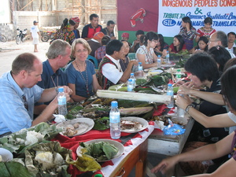
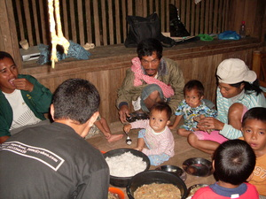

keen  
/kɔʔɔn/
v_rt.
“eat”
1.
vt.
for a person or animal (egkeen, migkeen/ingkeen, keen, agent, eg><ø-) to eat something (egkeenen, ingkeen/migkeen/pigkeen, keena, migkeenan, nakeenan, patient, eg><en-, nA><an-) with an instrument or part of their body or for a reason (igkeen, ingkeen, instrument or reason, ig><ø-) somewhere (egkeenan, migkeenan, nakeenan, ingkeenan, location, eg><an-)
Wrd.Gloss: eat
Migkeenan kud e sika ne keenen.
I've eaten that food.
Nakeenan kew red te kasilè?
Have you eaten enough sweet potato?
Egkeen ke red te hemey?
Are you eating rice?
Kasilè ka egkeenen ta kuntee.
Our food today is sweet potato.
Iyan ku igkeen ka belad ku.
I'm going to eat with my fingers.
Ingkeenan ney sika ne baley gabii te paniudtu
We ate lunch at that house yesterday.
Gramm. There is no past tense form for the accessory prefix. If you want to say "Yesterday I ate with my fingers", you need to say "Gabii ingamit a te belad ku te egkeen" (Yesterday I used my fingers to eat).
Eng. eat; dine
Tag. kumáin
Ceb. magkáun
Ilo.: mangán
Binukid: kaʔen
Sarangani: kaʔen
Cotabato Manobo: kaʔen
Tasaday: kaʔen
Tigwanon: keʔen
Dibabawon: keʔen
WBM: kaʔan
Ilianen: kaʔan
Cagayano: kaʔan
Obo: kaʔan
Kinamigin: kaʔun
Tagbawa: kan
Proto: kaʔen
OCM: Eating (264)
DDP: Animal eating (1.6.4.2), Eat (5.2.2)
Online dict status: -
Usage level: B
vt.
for a person or animal (egpakakeen, nakakeen, agent, egpAkA-) to be able to eat something (egkakeen, nakeen, patient, egkA><ø-)
Egpakakeen ki te mateles ke egbasuk ki.
We can eat delicious food if we work.
Egkakeen ta ka mateles ke egbasuk ki.
We will be able to eat delicious food when we work.
Nakakeen key te ngalap ne babuy gabii
We were able to eat pork yesterday.
Online dict status: -
Usage level: M
vt.
for a person or animal (egpakakeen, nakakeen, agent, egpAkA-) to be able to eat something (egkakeenan, nakeenan, location, egkA><an-)
Egkakeenan ki ke egdakelen ta te egsusubba.
We can eat enough food if we cook more.
Online dict status: -
Usage level: M
vt.
for a person or animal (egpakeen, migpakeen/impakeen, pakeen, agent, eg><ø-pA-) to feed another person or animal (egpakeenan, impakeenan/migpakeenan/pigpakeenan, pakeeni, goal, eg><an-pA-) with food (igpakeen, napakeen, instrument, ig><ø-pA-)
Data Qual: what's this napakeen form?
Igpakeen ku pad te anak ku ka binulalu.
I'm going to feed my child with porridge.
Pakeena nu pa ubag ka asu.
Feed the dog, please.
Eng. feed
Tag. magpakaín
Ceb. magpakaon; pakaunon
Ilo.: pakanén
OCM: Eating (264), Infant Feeding (853)
Online dict status: -
Usage level: M
vt.
for a person or animal (egpangeen, migpangeen, impangeen, agent, egpaN-) to eat something for a reason
Data Qual: check gloss - many things?
Migpangeen a te ubbus te kasilè su warè behas ney.
I ate sweet potato tops because we didn't have rice.
2.
v.
for people or animals (egpakeeney, egpegkeeney, impakeeney, nekegkeen, migpakeeney/pigpakeeney, agent, egpeg-) to share food with each other
Egpegkeeney ki rè kayi te senal ku.
We will share my portion among us.
Eng. share; divide
Online dict status: -
Usage level: M
3.
n.
(keenen, -en) food
Eng. food
Tag. pagkain
Ceb. pagkaon
Ilo.: kanén
OCM: Diet (262)
Online dict status: -
Usage level: M
4.
n.
(keenanan, -an-an) eating place
Eng. eating place; dining place; restaurant; table
Tag. kainan
OCM: Business Structures (347)
Online dict status: -
Usage level: M
v.
for food (egkakeen, nakakeen, actor, egkA><ø-) to be available to eat by someone (egkakeenan, ingkakeenan/migkakeenan/pigkakeenan, nakeeni, location, eg><an-)
Warè key nakeeni.
We didn't get (enough) to eat.
Eng. food available; edible
Online dict status: -
Usage level: M
v.
for a group of people (masikeen, masi-) to eat individually (maybe together or maybe at separate times), even if they weren't expected to eat.
Masikeen dè due sikandan.
They all ate (even though there was no budget for them)
Eng. eat individually
Online dict status: -
Usage level: R
Updated by: RJH,RJH,TME,RJH,QDL,NJK,NJK,RAA,RJH
Last updated: 29/Jul/2014
"keen" in text "Proving Innocence II (When Accused of Adultery)"
"keen" in text "A day's activities"
"pegkeen" in text "Te pegkeen"
"pegkeen" in healthbook "Mania te keilangan neg lu-luan ta ka me belad ta?"
"keen" in healthbook "Mania te keilangan neg lu-luan ta ka me belad ta?"
"keenen" in healthbook "Mania te keilangan neg lu-luan ta ka me belad ta?"
"egkeen" in healthbook "Mania te keilangan neg lu-luan ta ka me belad ta?"
"egkeen" in healthbook "Mania te keilangan neg lu-luan ta ka me belad ta?"
This page last updated: 28-Dec-2019
Copyright © 2009-2014, Matigsalug Language Christian Association, Inc